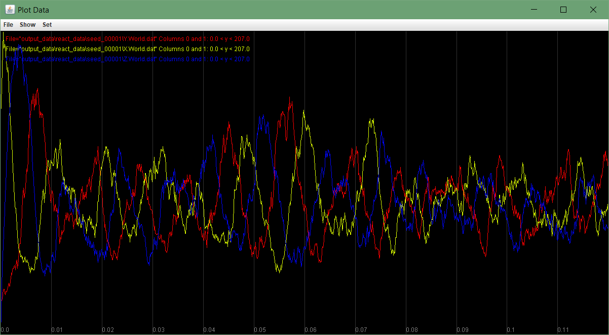

Building a Biological Oscillator
Oscillators are everywhere in nature
Even if placed in a bunker, humans will maintain a roughly 24-hour cycle of sleep and wakefulness1. This circadian rhythm guiding our daily schedule is not unique to animals but rather is present throughout living things, including plants and even cyanobacteria2.
Life processes like the circadian rhythm that oscillate over time are not confined to circadian rhythms. You may feel like you have some control over when you go to bed, but your heart and respiratory system both follow cyclical rhythms that are subconscious. To take a much lower level example, eukaryotic cells are governed by a strict cell cycle as the cells grow and divide.
We might guess from what we have learned in this module that these cyclical processes must be built upon simple rules serving as a pacemaker controlling them. However, the question remains as to what these pacemakers are and how they correctly execute oscillations over and over, throughout an organism’s life.
Researchers have identified many network motifs that facilitate oscillation, some of which are very complicated and include many components. In this lesson, we will focus on a simple three-component oscillator motif called a repressilator3. In this lesson, we will implement the repressilator with a particle simulator.
The repressilator: a synthetic biological oscillator
The repressilator motif is shown in the figure below. In this motif, all three proteins are transcription factors, and they form a cycle in which X represses Y, Y represses Z, and Z represses X (hence the name). The repressilator clearly forms a feedback loop, but nothing a priori about this motif would indicate that it would lead to oscillation; after all, we have already seen feedback processes in this module that did not lead to oscillation.
 The repressilator motif for three particles X, Y, and Z. X represses Y, which represses Z, which in turn represses X, forming a feedback loop.
The repressilator motif for three particles X, Y, and Z. X represses Y, which represses Z, which in turn represses X, forming a feedback loop.
STOP: Try building a reaction-diffusion model for the repressilator, assuming that we start with an initial concentration of X and no Y or Z particles.
To build a reaction-diffusion model accompanying the repressilator, we start with a quantity of X particles, and no Y or Z particles. We assume that all three particles diffuse at the same rate and degrade at the same rate.
Furthermore, we assume that all three particles are produced as the result of an activation process by some other transcription factor(s), which we assume happens at the same rate. We will use a hidden particle I that serves to activate the three visible particles via the three reactions I → I + X, I → I + Y, and I → I + Z, all taking place at the same rate.
In the previous lesson on the feed-forward loop, we saw that we can use the reaction X + Y → X to model the repression of Y by X. To complete the repressilator model, we will add the two reactions Y + Z → Y and Z + X → Z, having the same rate as the reaction X + Y → X.
If you have followed our previous tutorials, then you may feel comfortable taking off the training wheels and implementing the repressilator with your own reaction-diffusion model. We also are happy to provide the following tutorial.
Interpreting the repressilator’s oscillations
The figure below shows the results of our simulation by plotting the number of X, Y, and Z particles over time. As we can see, the system shows clear oscillatory behavior, with the concentrations of X, Y, and Z taking turns being at high concentration.
STOP: Why do you think that the repressilator motif leads to this pattern of oscillations?
 Modeling the repressilator’s concentration of particles. X is shown in yellow, Y is shown in red, and Z is shown in blue.
We will attempt to provide a high-level explanation of why the repressilator produces oscillations from a simple set of rules.
Because the concentration of X starts out high, with no Y or Z present, the concentration of X briefly increases because its rate of production exceeds its rate of degradation. Because there are no Y or Z particles present, there are no Y or Z to degrade, and the concentrations of these particles start increasing as well.
As soon as there are some Z particles present, the reaction Z + X → Z occurs often enough for the rate of removal of X to exceed its rate of production, accounting for the first peak in the figure above.
Furthermore, because the concentration of X particles begins high, the reaction X + Y → X prevents the number of Y particles from growing initially. This is because the remaining repression reaction (Y + Z → Y) has very little effect initially because the concentrations of Y and Z are both low. As a result, the rate of production of Z is higher than its rate of removal, and so its concentration increases quickly while the concentration of Y stays low.
In summary, after an initial rise, the concentration of X plummets, with the concentration of Z rising up to replace it. The concentration of Y increases, but at a slower rate than that of Z. This situation is shown by the second (blue) peak in the figure above.
As a result, Z and X in effect have switched roles. Because there is a high concentration of Z, the reaction Y + Z → Y will be frequent and cause the concentration of Z to decrease. Furthermore, because the concentration of X has decreased, and the concentration of Y is still relatively low, the reaction X + Y → X will occur less often, allowing the concentration of Y to continue to rise. Eventually, the decrease in Z and the increase in Y will account for the third peak (red) in the figure above.
At this point, the reaction X + Y → X will suppress the concentration of Y. Because the concentration of X and Z are both lower, the reaction Z + X → Z will not greatly influence the concentration of X, which will rise to meet the following concentration of Y, and we have returned to our original situation, at which point the cycle will begin again.
The power of noise
Take another look at the figure showing the oscillations of the repressilator. You will notice that the concentrations zigzag as they travel up or down, and that they peak at slightly different levels each time.
This noise in the repressilator’s oscillations is due to variance as the particles travel around randomly. Specifically, the repression reactions require two particles to collide in order for the reaction to take place. Due to random chance, these collisions may occur more or less often than expected because of random chance. We should also note that some of this noise is due to low sample size: we have around 150 molecules at each peak in the above figure, but a given cell may have on the order of 1,000 to 10,000 molecules of a single protein.4
Yet the noise that appears in the repressilator’s oscillations is a feature, not a bug. As we have discussed previously, the cell’s molecular interactions are inherently random. So if we see oscillations in a simulation that includes noise arising from random chance, we can be confident that this simulation is robust to a certain amount of variation.
In this module’s conclusion, we will further explore the concept of robustness as it pertains to the repressilator. What happens if our simulation experiences a much greater disturbance to the concentration of one of the particles? Will it still be able to recover and return to the same oscillatory pattern?
-
Aschoff, J. (1965). Circadian rhythms in man. Science 148, 1427–1432. ↩
-
Grobbelaar N, Huang TC, Lin HY, Chow TJ. 1986. Dinitrogen-fixing endogenous rhythm in Synechococcus RF-1. FEMS Microbiol Lett 37:173–177. doi:10.1111/j.1574-6968.1986.tb01788.x.CrossRefWeb of Science. ↩
-
Elowitz MB, Leibler S. A synthetic oscillatory network of transcriptional regulators. Nature. 2000;403(6767):335-338. doi:10.1038/35002125 ↩
-
Brandon Ho, Anastasia Baryshnikova, Grant W. Brown. Unification of Protein Abundance Datasets Yields a Quantitative Saccharomyces cerevisiae Proteome. Cell Systems, 2018; DOI: 10.1016/j.cels.2017.12.004 ↩